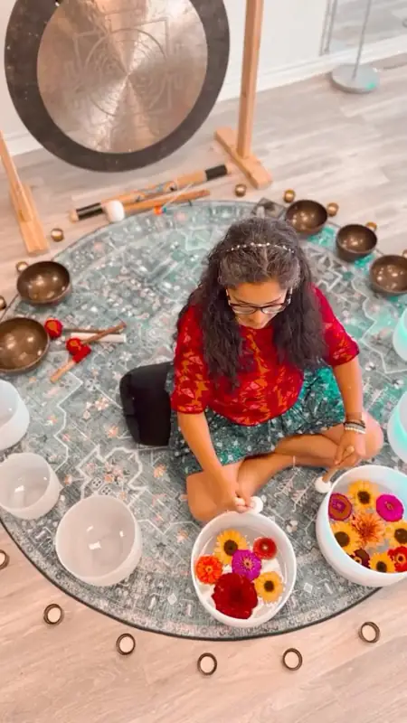
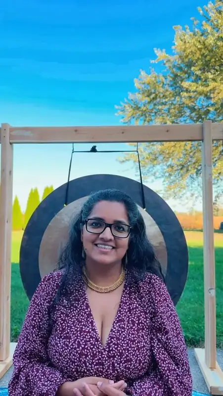
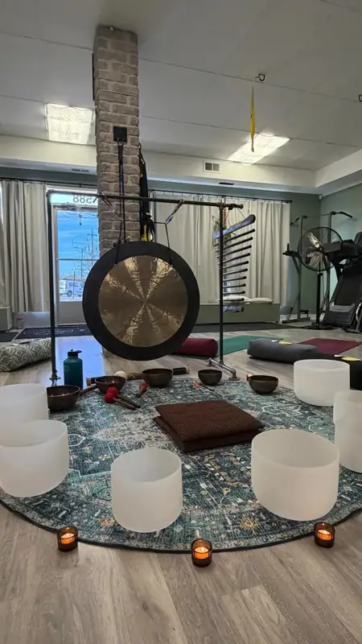

Quartz fused at high heat and spun in a mould; size and wall thickness set the note. Purnima uses crystal bowls in her sound baths.
02 / 10 · In Purnima's kit
Himalayan singing bowl
A metal standing bell, warm and full of overtones.

Sounds like
Layered tones that shimmer and beat.
Traditionally for
Marking the start and end of meditation.
Played by
A padded strike, or rubbing the rim.
More
Usually copper and tin bronze, hand hammered or cast in Nepal and northern India. In sound baths they are played around the body, sometimes placed on it.
03 / 10 · In Purnima's kit
Gong
A bronze disc that swells from a hum into a wave.

Sounds like
Deep, wide, and slow to fade.
Traditionally for
Ceremony, temple ritual and deep rest.
Played by
Soft felt mallet, built up in layers.
More
Hammered or spun from bronze or nickel silver and hung in a frame. Used across East and Southeast Asia for over a thousand years. Struck softly and repeatedly, the sound builds into a slow swell.
04 / 10 · In Purnima's kit
Chimes
Tuned metal bars hung in a row.

Sounds like
A bright, scattered cascade.
Traditionally for
Marking a shift or a return.
Played by
A finger brushed along the row.
More
Aluminum or brass bars cut to different lengths, each a different pitch. Bar chimes are also called a Mark tree.
05 / 10 · Also in sound healing
Koshi chimes
Eight tuned rods inside a bamboo tube.
Sounds like
Soft wind chimes heard from inside.
Traditionally for
Calm, elemental moods in meditation.
Played by
Turning it gently by its cord.
More
Made in France in four tunings named for the elements: Terra, Aqua, Aria and Ignis. Not part of Purnima's listed kit.
06 / 10 · Also in sound healing
Tuning fork
Two prongs, one pure tone, felt more than heard.
Sounds like
A single, steady, quiet note.
Traditionally for
Vibration on points of the body.
Played by
A tap on a rubber puck or the knee.
More
Invented in 1711 by John Shore to tune instruments. Weighted forks carry small weights for a stronger felt vibration. Not part of Purnima's listed kit.
07 / 10 · Also in sound healing
Ocean drum
A frame drum filled with rolling steel beads.
Sounds like
Surf rising and falling on a beach.
Traditionally for
Guiding slow, wave-like breathing.
Played by
Tilting it slowly with both hands.
More
A round frame with a head on both sides, often one clear so you can watch the beads. Not part of Purnima's listed kit.
08 / 10 · Also in sound healing
Rain stick
A hollow tube where seeds fall through pins.
Sounds like
Steady rain that slowly settles.
Traditionally for
Calling the rain, and relaxation today.
Played by
Turning it slowly end over end.
More
Traditionally a dried cactus stem with its spines pushed inward, filled with pebbles and sealed. Often credited to peoples of Chile and Peru. Not part of Purnima's listed kit.
09 / 10 · Also in sound healing
Shruti box
A wooden box of reeds and bellows that holds a drone.
Sounds like
A warm, reedy hum that stays put.
Traditionally for
Holding the drone for chant and song.
Played by
Pumping the bellows with one hand.
More
From India, built like a harmonium without a keyboard. Stops on the front choose the notes, usually the tonic and fifth, Sa and Pa. Not part of Purnima's listed kit.
10 / 10 · Also in sound healing
Voice (Naad)
In Naad yoga, the first instrument is your own body.
Sounds like
A hum you feel in the face and chest.
Traditionally for
Mantra, meditation and calming the mind.
Played by
Chanting Om, humming, Bhramari breath.
More
Bhramari, the humming bee breath, is described in the Hatha Yoga Pradipika: breathe in, then breathe out on a steady hum. Purnima calls herself a Naad Yogini.